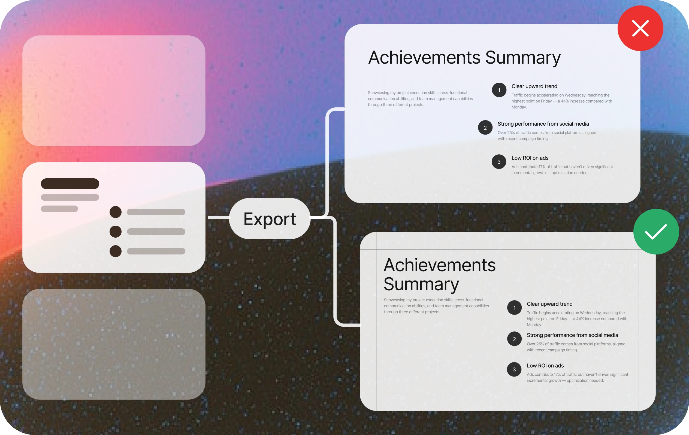

AnyGen 到底解决了 AI 做文档的哪几个真痛点？
AI 文档生成工具已经不少了，但 AnyGen 把三个最让人头疼的环节——模板跟随、编辑自由度、主动调研——从"凑合用"拉到了"能当真工作流用"。
这个类目里它排在什么位置
AI 辅助文档生成这条赛道，到 2026 年其实已经分成了三层。
最底层是大厂生态里的补全工具——Office Copilot、Gemini 集成进 Workspace，它们的优势是"零迁移成本"，你在熟悉的界面里调调语气、缩缩 bullet 没问题，但一旦涉及从零生成一份完整 deck 或一份研究报告，产出质量就开始跳水，更别说跟随品牌模板这种精细活了。
中间层是垂直 PPT 工具——Gamma、Beautiful.ai、SlideAI 这一批。它们解决了"从零生成"的问题，但几乎所有这类工具都有同一个致命伤：生成完你还是得把文件导进 PowerPoint 里重新排版一遍。因为它们的编辑器只能改文字，形状位置锁死，元素不能自由拖拽，对齐工具基本没有，换一张图片得让 AI 重新生成整页。
AnyGen 站在这两层之上——去它的官网看一眼就能确认，做的事情很简单：把原生 PPTX 作为底层，然后在上面加 AI 能力。这一个决策直接解决了垂直工具的编辑问题，再往上叠加 Universal Agent 解决了"从零生成缺素材"的问题——它不是让 AI 回答你一个问题，而是让 AI 主动去做一件事。
差异化一：原生 PPTX 带来的编辑自由度
很多人第一次用 AnyGen 的 Slides 编辑器时会觉得"这不就是 PowerPoint 的网页版吗"——对，这正是它比同行强的地方。

底层是原生 PPTX 意味着每一个元素都是真正可编辑的对象，而不是一张图片或一个被锁死格式的文本框。你可以自由拖拽定位任何元素（文字框、图片、形状、图表），用顶部工具栏的左对齐/居中/右对齐、顶对齐/垂直/底对齐、水平/垂直分布来精排版，调整元素前后层级，甚至插入矩形、圆形、箭头、线条、星形等所有标准形状并自定义填充色、边框色、阴影。
更重要的是，手动编辑和 AI 精修是两条并行的线。你可以手动拖拽调整一个形状的位置，也可以选中某一页让 AI 局部优化——"把这页的三个 bullet 简化一下"，两种方式可以在同一张幻灯片里交替使用。像素级精度的对齐间距你自己来，方向性的语气调整让 AI 来，各取所长。
一个 20 页的 investor deck 的实际工作流大概是：AI 按模板生成初稿 → 逐页审阅标记问题 → 某页 bullet 太啰嗦就让 AI 简化 → 某页图表颜色和品牌冲突就手动改 → 第 12 页应该在第 8 页前面就手动拖动页面顺序 → 调整整体节奏。整个过程 30 分钟左右，比从零做快得多，也比生成完导 PowerPoint 再重新排快。
差异化二：企业模板跟随——第一个真正解决这个问题的 AI
做过企业 PPT 的人都知道，品牌模板是个严肃的东西：哪一页用哪种 Master Layout（封面/目录/章节/正文/结束页）、品牌主色辅助色是什么、标题字号正文字号项目符号缩进、页眉页脚 Logo 位置页码格式、表格图表的默认样式。手动一页一页调这些格式，在一个 20 页的 deck 上可能要花半小时以上。
传统 AI 工具要么完全不管品牌规范，要么只能继承品牌色和字体名，复杂的母版结构根本搞不定。AnyGen 的做法是直接让你上传企业 PPTX 模板文件，然后：
- 解析 Master Layout 结构：识别模板里有多少种母版，每种母版的用途
- 提取设计规范：品牌色值、字体族、字号、对齐方式、间距
- 理解占位符：每种页的标题占位符、内容占位符、页脚占位符在哪里
- 新生成时自动应用：每一页都选最合适的母版、用正确的字体、填对正确的位置

我后来去AnyGen文档翻了一下才看到，官网给了一个品牌经理的证言："该品牌有严格的 VI 规范。AnyGen 是第一个完美跟随上传的企业模板的 AI——字体、颜色、复杂布局，它自动保证品牌一致性，节省了大量时间。"——这点我在实际使用中能确认，我有一份用了三年的公司模板，上传后生成的 deck 第一页就是正确的封面母版，品牌色值完全匹配，字体族也没跑偏。
能跟随的包括 Master Layout 选择和应用、品牌色、字体族和字号、基本对齐和间距、Logo 页眉页脚页码位置。可能需要手动微调的是非常复杂的渐变特效、特殊自定义形状位置、跨页联动的元素（比如章节分隔线的连续效果）——这些属于极端场景了。
差异化三：Universal Agent——不是问答，是让 AI 去做一件事
普通 AI 问答是"你问一句它答一句"，信息来源是训练知识加联网搜索片段，输出是一段零散的聊天记录。AnyGen 的 Universal Agent 做的事情完全不同：你说"帮我研究一下市面上排名前三的 CRM 工具"，它会主动搜索 CRM 市场现状确认这三家确实是头部，分别浏览三家的官网产品页定价页功能介绍页，去 G2 Capterra 读用户评价，去各自的文档中心读技术细节，最后整理成一份结构化的对比表格和分析结论。
它的核心差异在于：
| 维度 | 普通 AI 问答 | AnyGen 通用 Agent |
|---|---|---|
| 信息来源 | 训练知识 + 联网搜索片段 | 主动浏览多个网站、完整阅读报告 |
| 输出形式 | 一段回答 | 结构化研究文档 |
| 主动性 | 你问一句它答一句 | 自己规划搜索路径、决定要读什么 |
| 交付物 | 聊天记录 | 可以导出的文档/报告 |
Agent 产出的研究结果还可以直接作为 Document 的基础让 AI 扩展成完整报告，一键转成 Slides 做竞品对比 deck，或者作为 Data Analysis 的背景上下文先调研再拖 CSV 做数据层面的补充分析。
但要注意两个边界：主动浏览多个网站不是即时完成的，复杂研究可能需要几分钟；它只做公开信息为主，需要登录才能看的企业内部系统或订阅制行业报告，要配合 Browser Operator 用本地浏览器已有的登录会话来访问。
为这些优势付出了什么
没有东西是免费的。
安装包从官方下载拿。免费层额度紧。每天 200 credits 按天重置，轻度试用偶尔用没问题，但如果你每天都要生成多份交付物，这个额度很快就会耗尽。下载也有日限额。免费层还只能同时跑 1 个任务，高峰时段排队严重——因为速度优先级是最低的。
订阅门槛不低。Plus 计划每月 $10（年付 $96），Pro 和 Max 的价格更高。如果你只是偶尔需要做一份 PPT，免费层加充值包的灵活组合可能更划算；但如果你确定长期用，年付折扣最大，是性价比最高的选项。升级前建议先统计一周的 credits 消耗，算出自己的月使用量，确认免费层的下载限额和并发数是不是真的不够用。
学习曲线比大厂生态工具陡。Office Copilot 那种"打开熟悉的文档按一个按钮就行"的体验在 AnyGen 上不存在——你得先理解任务模块的区别（Slides、Document、Universal Agent、Data Analysis 各干什么），如果涉及浏览器操作还要配置 Browser Operator 的登录会话。好处是学会了之后产出质量会有数量级的提升。
选购结论
什么样的人选 AnyGen：
- 企业用户或品牌经理：有严格的 PPT 模板规范需要跟随，不想每次做 deck 都手动调格式
- 需要深度编辑重度 PPT 的人：生成完不想再导 PowerPoint 重新排版，希望在生成器里就能完成从初稿到交付的全过程
- 市场研究员或分析师：需要主动调研竞品、技术选型、行业观察，而不是被动回答一个问题
- 自由职业者或小团队：每天都要生成多份交付物，免费层额度不够，Plus 年付的价格在生产力投入里是合理的
什么样的人选别的：
- 只需要轻度补全的用户：Office Copilot 或 Gemini 生态里的补全工具零迁移成本，够用了
- 完全不需要编辑重度 PPT 的人：如果 AI 生成什么你就接受什么，Gamma 这类工具更轻量
- 预算极其有限且使用频率低的人：免费层凑合用就行，不必订阅
总结一句话：如果你觉得"AI 做文档就是生成个初稿然后我手动重排一遍"，那你还没摸到这个类目的天花板。AnyGen 把原生 PPTX 做底层、加模板跟随、加主动调研 Agent，三件事叠加起来，让 AI 文档生成第一次具备了"能当真工作流用"的资格——而不是一个花架子演示工具。
这套资料我同步到了三个仓库，方便国内不同网络环境下的朋友都能拿到：AnyGen 文档在GitHub上维护了完整的版本历史，Gitee镜像让国内访问速度更快，GitCode备份作为额外的保险，三个仓库的内容保持一致。